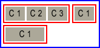
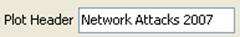

User Guide
1. Introduction
Self written R scripts are usually not longer than 100-150 lines. In most cases, there are 5-10 code items, that the user needs to change often, like setting the working directory, reading an input file, setting parameters to new values etc. The rest of the code usually remains unchanged.
For this problem we have developed a solution: "R GUI Generator (RGG)". RGG is a GUI generator for R scripts based on a GUI definition language in XML. A GUI is generated by adding predefined GUI tags to the R script. User-GUI interactions are converted to R code, which replace the xml-tags in the R script.
The project’s aim is to provide R developers with a tool to make R based statistical computing available to a wider audience less familiar with script based programming. RGG can also benefit experienced R programmers by enabling regular changes to the code via a GUI interface e.g. setting of an input file path via file chooser.
2. RGG File Structure
RGG files are XML files. Rules applying to an XML file also apply to RGG files. To distinguish an RGG file from other XML file, the root tag must be set to <rgg>. Between <rgg> and </rgg> the user can write any further GUI element tags and/or R script. The file extension of an RGG files can either be .rgg or .xml. In the following chapter an introductory example is presented.
3. An Introductory Example
Let’s suppose, someone wants to get a "summary" for a small local file, using the following R-Script:
myIris <- read.table(file="C:/iris.csv", header = TRUE, sep="\t") summary(myIris)
This is a simple, self-explaining R-Script. R loads the table and the "summary" function is executed.
If the file is located in another directory or does not have a header row or was seperated by ";" instead of "\t", the "read.table" function will not be executed correctly. The user has to find the problem and change the R script accordingly. Experienced users find the sources of errors quickly, however, unexperienced users will probably be frustrated by such errors.
The next box shows three GUI elements added to the R-script from above. The GUI elements are defined by RGG.
<rgg>
file = <filechooser label="CSV" description="Csv Dateien"
extensions="csv" fileselection-mode="files-only"/>
myIris = read.table(file, header=<checkbox label="header" span="2"/>,
sep=<combobox items="\t,;" label="Seperator" selected="T"/>)
summary(myIris)
</rgg>
RGG generates the following user interface for the xml file above (Figure 1):
Figure 1: The generated user interface
The first element is a "file chooser" for the parameter "file". The file simply has to be browsed and selected. The second element is a check box for "header". When selected, "TRUE" (instead of "FALSE") is returned to the R code. The last element is a combobox. Two choices for the "Seperator" are offered: "\t" or ";", the most common seperators.
Figure 2 shows the result of the GUI interaction:
Figure 2
Clicking „show R code", returns an R script with the corresponding changes. The changes are highlighted in bold:
file = "C:/Dokumente und Einstellungen/ilhami/Eigene Dateien/cllgene.csv" myIris = read.table(file, header = FALSE, sep=";") summary(myIris)
4. GUI Elements
A GUI element is an XML element using the defined RGG specifications. The GUI element is either visualized or is an instruction for the arrangement of further GUI elements. The GUI element returns modified R code. However there are some GUI elements that don’t return R code.
4.1 Visual components of GUI elements
Most times, a GUI element is comprised of several GUI components ("Widgets"). Because a GUI element can be described by only one XML-tag, it is simply called one element.
A <filechooser> is shown in Figure 3:
Figure 3
It contains 3 components:
- A label „CSV Datei".
- Next to this label is a non-editable text field, which shows the selected file:„…\Eigene Dateien\cllgene.csv".
- The "Browse" button that opens a file dialogue.
If the elements are composed of more than one GUI component, how does the user interface arrangement look like? <hbox> and <vbox> are used to put an element in it’s right place. Of course this has to be pre-planned, therefore the "RGG Panel Design" will be explained in the next chapter.
5. RGG Panel Design
As explained above, GUI elements are compositions of GUI components (widgets). Frequently, the basic elements, like <textfield> (a label and a text field), <filechooser> (a label, a text field and a button), consist of two or three GUI components and are usually arranged horizontally. However, there are also elements that should be arranged vertically (or the container element <vbox>, which arranges its contained elements vertically). Additionally, the GUI components of an element can be arranged both horizontally and vertically, i.e. spread across several columns and rows.
After picking the GUI elements fort the R script, it has to be carefully planned where the GUI elements and thus its GUI components will be placed.
The procedure to obtain the design should be like this:
- Select the GUI elements.
- Order the GUI elements horizontally and vertically. Keep in mind the component composition of each element.
- Put the selected GUI elements into its correct position in the R script.
5.1 Panel Layout
Imagine the layout to be a grid. A grid consists of rows and columns and their cells (see Figure 4).
Figure 4
The yellow areas are the gaps between the rows and the columns. Numbered cells could be GUI components. The height and length of the cells can vary depending on the component. Further, a GUI component can cover more than one cell.
The number of rows and columns is automatically calculated during the generation of the RGG panel and the components are put into their cells by RGG.
Let’s use some examples to explain the panel design. Some visualizations (screenshots) starting from the simplest user interface going to more complex ones, are shown below. These examples will also use new GUI elements, which are precisely defined later on in chapter 3. Therefore, those examples are deliberately shown without the generated R-code.
5.2 Arragement of GUI elements and their GUI components
First, we will draw the user interface, which should be generated by RGG. For this user interface dummy GUI elements are used and then visualized according to their GUI components, span and arrangement (horizontal or vertical).
1. Number of GUI components: 1; Arrangement: -
2. Number of GUI components: 1; Arrangement: -, Span: 2
3. Number of GUI components: 3; Arrangement: horizontal
4. Number of GUI components: 2; Arrangement: vertical
5. Number of GUI components: 3; Arrangement: horizontal, Span: 2
Red frames indicate GUI elements and the rectangles labeled C1, C2 or C3 are their GUI components. In example 2 and 5 the components are larger because "span" is set to "2".
There are two container elements: <vbox> and <hbox>. Some examples for their application will follow.
Please note that the root element <rgg> is like <vbox>, i.e. all child elements are arranged vertically in the layout, except for those, that are defined to be contained in an <hbox> element.
5.2.1 Arrange GUI elements vertically (default)
We want to arrange 2 GUI elements in a layout vertically (see Figure 5). The blue frame should symbolize the layout.
Example 1: Arrange GUI elements vertically
Figure 5: Vertically arranged GUI elements
We choose a <filechooser>, because it consists of 3 GUI components, and a <checkbox>.
<rgg> file = <filechooser label="Input" description="Dateien" extensions="csv"/> <checkbox label="header"/> </rgg>
No <vbox> was used because the child elements of <rgg> are arranged vertically by default. The generated user interface looks like this (Figure 6):
Figure 6
The checkbox is placed below the first component („Input") of <filechooser> (Figure 7). What would happen when the label of the checkbox would be longer than „header" (e.g. "save the plot in SVG format")?
Figure 7
In figure 8 the second component of the first row is pushed to the right. This happened because of the above mentioned longer label of the checkbox.
Figure 8
Instead of putting the checkbox only into the first column it can also be put in two or more columns. (see figure 9, using the dummy GUI elements).
Example 2: The „span" attribute
Figure 9: span=2
To do this the „span" attribute can be used and in this case is set to „2".
<checkbox label=" Save the plot in SVG Format" span = "2"/>
Figure 10: GUI with span=2
5.2.1 Arrange GUI elements horizontally
The container element <hbox> arranges its child elements horizontally. We want to arrange the example above horizontally.
Example 1: Figure 11 shows two GUI elements in one row.
Figure 11: Horizontally arranged dummy GUI elements
The RGG code for this example:
<rgg> <hbox> file = <filechooser label="Input" description="Dateien" extensions="csv"/> <checkbox label="header"/> </hbox> </rgg>
Figure 12: Horizontally arranged GUI elements
Example 2: Now we want to obtain the following layout: two GUI elements horizontally arranged and a third one below them, like in Figure 13.

Figure 13
Again, the third GUI element is a <checkbox> with a long label.
<rgg> <hbox> file = <filechooser label="Input" description="Dateien" extensions="csv"/> <checkbox label="header"/> </hbox> <checkbox label="Save the plot in SVG Format" span = "2"/> </rgg>
Figure 14: Generated user interface
6. RGG Elements
This chapter will describe RGG elements, their properties and how to use them. We have already introduced some RGG elements but not their properties. The properties will help to fine-tune the RGG elements. The properties are defined as attributes of an RGG element. Some are obligatory, some are optional.
6.1 <filechooser>
<filechooser> helps to select files or directories. <filechooser> has 3 GUI components that are arranged horizontally (Figure 17):
Figure 17: GUI components of <filechooser>
- Label: Used to describe the file or directory.
- Text field: The text field shows the selected files or directories.
- "Browse" - button: Clicking on it will open the actual filechooser window.
Attributes
- var: If used, it puts a variable in front of the R-code generated by <filechooser>. The name of the variable is the value of this attribute.
- label: The value of this attribute is the label of the filechooser.
- accepted-extension: Can be used to allow only certain file types. Comma separated file extensions are set as values of this attribute (e.g.:"txt,csv,fa,tiff"). To allow all data extension, the value is set to „*" (this is default).
- fileselection-mode:
- files-only : only files can be selected
- directories-only : only directories can be selected
- files-and-directories (default) : files as well as directories can be selected
- multiselection-enabled: When set to „true", the user can choose more than one file or directory. The paths of the selected files or directories are returned comma separated. „false" is default.
- description: The value of this attribute is shown in the field „data type" of the file chooser window, and should be a description of the selectable file types.
- span: the value of „span" defines the number of columns that will be covered by the text field (the second component of the filechooser).
Example 1: A filechooser, with all attributes set to default (Figure 18).
<filechooser/>
Figure 18:GUI for a simple file chooser
This generates the R code: "D:/matrix.txt"
Example 2: A filechooser with a „label" and a „var" attribute.
<filechooser var="file" label="Input"/>

Figure 19: The label "Input" is put in the first column
The second effect of this code is due to the „var" attribute, which generates the following R code: file<-"D:/matrix.txt"
6.2 <textfield>
The textfield element is suited for labeling variables, like numeric variables or a string.
Figure 20: <textfield>'s GUI components
<textfield> has 2 GUI components (see figure 21):
- Label: used for labeling
- Textfield: input field
Attribute
- var: If used, the input is assigned to a variable in the R-code. The name of the variable is the value of this attribute.
- label: The value of this attribute is the label
- data-type: Either „number" or "text" default).
- default-value: A default input value can be defined, that will be shown in the text field when the user interface is started.
- size: This attribute only accepts positive numbers as values for the length of the text field. Default is 5.
- span: span of the text field
Example 1: Define the header of a plot by a <textfield> element.
The header (e.g. "Network Attacks 2006") will be returned to the plot function of R. The plot will show the number of network attacks per month in the year 2006. The analysis should then be repeated for the year 2007. The header has to be changed to use the same script for the year 2007 again.
<textfield var="header" label="Plot Header" data-type="text" default-value = "Network Attacks" size="15"/>
Figure 21
We want to change the header therefore we type „Network Attacks 2007" into the text field:

Figure 22:Modified text field
The text field of figure 23 returns this R-code: header<-"Network Attacks 2007"
Example 2: Defining the parameter in the body of the function
We can also use <textfield> directly in the plot function:
plot(header=<textfield label="Plot Header" data-type="text" default-value = "Network Attacks" size="15"/>,…)
The user interface is the same as in Example 1 above. However, the script changed. Here, we didn’t use the "var" attribute. The returned R code is:
plot(header="Network Attacks 2007",…)
6.3 <combobox>
The combobox is a GUI element, which offers only a defined number of items for selection. Only one item can then be selected.
<combobox> has two GUI components (Figure 23).
Figure 23: GUI components of combobox
- Label: used for labeling
- Combobox: the selectable entries are listed (Item 1, Item 2 and Item 3).
Attributes
- var: If used, the selection is assigned to a variable in the R-code.
- label: The value of this attribute is the label of the combobox
- items: Comma separated list of values, which will be the items of the combobox.
- selected-item: The first item of the combobox is selected by default. If another item should be default, the value has to be changed, e.g. for the third item: selected-item="Item 3".
- selected-index:As in "selected-item" but with index numbers. For the third item of the list: selected-index="3".
- span: Span of the combobox
Example 1: Header of Plot.
<combobox var = "header" label = "Header of Plot" items = "Department 1,Department 2,Department 3,Department 4"/>
The user interface is shown in Figure 25, underneath the figure is the generated R-code.
Figure 24: Generates R code header<-"Department 1"
6.4 <slider>
With the GUI element slider the user can set a value by moving an indicator horizontally or vertically.
<slider> has two GUI components (Figure 25)
Figure 25: GUI comonents of slider
- Label: used for labeling
- Slider: the slider with the indicator.
Attributes
- var: If used, the value returned by the slider is assigned to a variable in the R-code.
- label: The value of this attribute is the label of the slider
- min: The minimum value of the slider (default is 0).
- max: The maximum value of the slider (default is 100).
- default-value: The value of the slider at initialization. This value has to be between min and max (default is 50).
- paint-ticks: When set to "true" (or "t"), tick marks will be drawn into the slider. "false" is default. The figure shows minor ticks and major ticks. (smaller and larger ticks).
- "true":
- "false":
- paint-labels: Default is "false". When set to "true" the slider is labeled by 0, 10, 20, 30, 40, 50, 60, 70, 80, 90, 100. The interval of the label values can be chosen by „major-tick-spacing".
- "true":
- "false":
- paint-track: Default is „true". The track is the lane along which the indicator can be moved.
- "true":
- "false":
- paint-value: Shows the currently chosen value above the slider.
- "true":
- "false":
- major-tick-spacing: Determines the interval of two "major ticks". For min=0, max=100 and major-tick-spacing=20, the intervals will be 0-20-40-60-80-100.
- minor-tick-spacing: Determines the interval of two "minor ticks". The minor ticks will be drawn between two major ticks.
- span: Span of the slider. Because a slider is usually longer than other GUI elements this argument should be used. To let the slider span across all columns, use span="full". "full" spans the component from the active column to the last column.
Example 1: This example combines the properties of the sliders depicted above (Figure 28):
<slider label="Slider" min="50" max="150" default-value="100" paint-ticks="true" paint-labels="true" paint-value="true" major-tick-spacing="20" minor-tick-spacing="5"/>
Figure 26: Slider
6.5 <checkbox>
A checkbox has only two states: selected or not selected. For each state a value is returned: Default settings are "TRUE" for the selected checkbox and "FALSE" for the not selected checkbox.
<checkbox> has only one GUI component. There is no additional label component because a label is already contained in the checkbox component (Figure 29).
Figure 27: checkbox's GUI components
Attributes:
- var: If used, the value returned by the checkbox is assigned to a variable in the R code.
- label: The value of this attribute is the label of the checkbox.
- selected: When set to "t" or "true" (not case-sensitive), the checkbox is selected at initialization, if set to "f" or "false" the checkbox is not selected. Default is "f".
- return-value-by-selected:If another value than "TRUE" should be returned when the checkbox was selected, the value can be assigned to this attribute.
- return-value-by-notselected:If another value than "FALSE" should be returned when the checkbox was selected, the value can be assigned to this attribute.
- labelposition:By default, the label of the checkbox is on the right of the checkbox (therefore the default is "right"). To put the label on the left, the attribute can be set to "left".
- span:Span of the checkbox. Is usually used only with long labels.
Example 1: A parameter of the function "plot" is "axes". When set to "TRUE", the axes will be drawn in the plot, when set to "FALSE" the axes will not be drawn. Should we use a checkbox? Yes!
<checkbox label="draw axes" var="axes"/>
The checkbox is displayed in the user interface (Figure 30). It generates the R code "axes<-TRUE":
Figure 28
Example 2: return-value-by-selected and return-value-by-notselected
Suppose some data is loaded in the upper part of a script. In some cases the data has to be normalized, in some cases it hasn’t to be normalized. For such a case we could use a checkbox. Thus, the returned R code has to be changed by return-value-by-selected and return-value-by-notselected. For the case of normalization the R code runs a function called "normalize". For the not selected state nothing (no normalization) should happen.
<checkbox label="Normalize" return-value-by-selected="normalize(var)" return-value-by-notselected=""/>
Figure 29
Checking "Normalize" generates this R code : "normalize(var)"
6.6 <radiobutton>
Radiobuttons are related to checkboxes. A radiobuttion also has two states, selected and not selected. Radiobuttons can be grouped and only one radiobutton of a group can be selected. This is the main difference between a checkbox and a radiobutton.
Because only one radiobutton of a group of radiobuttons can be selected, there can only be generated R code for the selected radiobutton. That’s why the radiobutton GUI element doesn’t have attributes like „return-value-by-notselected".
Attributes:
- var: If used, the value returned by the radiobutton is assigned to a variable in the R-code. The user should know, whether he wants to assign the same value to all radiobuttons of a group.
- label: The value of this attribute is the label of the radiobutton
- button-group: The button group of this radiobutton. It can be a number or text or both.
- selected: When set to "true" the radiobutton is selected at initialization, when set to "false" the radiobutton is not selected. Default is "f".
- return-value-by-selected:If another value than "TRUE" should be returned when the radiobutton was selected, the value can be assigned to this attribute.
- labelposition: By default, the label of the radiobutton is on the right of the radiobutton (therefore the default is "right"). To put the label on the left, the attribute can be set to "left".
- span: Span of the radiobutton. Is usually used only with long labels
Example 1: Assignment of Gender for a Variable "x".
<radiobutton var="gender" label="Männlich" return-value-by-selected="male" button-group="bg" selected="TRUE"/> <radiobutton var="gender" label="Weiblich" return-value-by-selected="female" button-group="bg"/>
Figure 30: Radio buttons
The user interface of figure 30 generates this R code: gender<-male
6.7 <listbox>
The GUI element listbox can be used for the display of a list of selectable items.Either one or more items can be selected from the list. This property (one item or more items) is controlled by an attribute. If only one item can be chosen the listbox is returning R code exactly like a combobox. For more items a comma separated list will be returned as R code.
A listbox has two GUI components (Figure 31):
Figure 31: GUI components of listbox
- Label: used for labeling
- Listbox: contains a list of items
Attributes:
- var: If used, the value returned by the listbox is assigned to a variable in the R-code.
- label: The value of this attribute is the label of the listbox.
- visible-row-count: Number of visible rows (default is 4).
- data-type: Either "number" or "text" (default). "text" returns the chosen items in the R code in quotes.
- span: span of the listbox.
Example 1: A listbox with 6 items
<listbox label="Item List" items="Item 1,Item 2,Item 3,Item 4,Item 5,Item 6"/>
Figure 32: Listbox
6.8 <vector>
A vector contains multiple values. Each value in a vector is from the same data type. There are three data types in R, and therefore three different vector types: numeric, logical and character vectors.
The user interface displays as many text fields as there are vector values for a numeric or a character vector; and checkboxes for a logical vector. A numeric vector only accepts numeric input values in the text fields. The vectors can be arranged either horizontally or vertically.
A vector GUI element returns a vector object "c()" in the R code. The values of the text fields or checkboxes are filled into the vector object.
<vector> has a label as well as text fields or checkboxes, see the screenshots below:
- Numeric Vector:
- Character vector:
- Logical Vector:

- var: If used, the vector object returned by the <vector> is assigned to a variable in the R-code.
- label: The value of this attribute is the label of the vector.
- vector-type: "numeric" for numeric vectors; "character" for character verctors (default); "logical" for logical vectors.
- size: The number of vector values.
- default-value: A comma separated list. The first value of the list will be the first value of the vector, the second value of the list will be the second value of the vector, and so on. For a logical vector the list can only contain the values "true" or "false"
- alignment: For the vertical arrangement of the text fields or checkboxes this attribute is set to "vertical". For horizontal arrangement to "horizontal" (default).
Example 1: A character vector (Figure 33)
<vector var="levels" label="Matrix Levels:" size="4" default-value="none,mild,medium,severe"/>
Figure 33: A character vector with 4 vectors values
The generated R code is: levels <- c("none","mild","medium","severe")
Example 2: A numeric vector (Figure 35):
<vector var="numvector" label="A numerical Vector" size="5" default-value="3,5,7,8,9"/>
Figure 34: A character vector with 5 values
The generated R code is: numvector <- c(3,5,7,8,9)
Example 3: A logical vector (Figure 36):
<vector vector-type="logical" label="A logical Vector" size="5" default-value="true,false,false,true,false"/>
Figure 35: A logical vector
The generated R code is: c(TRUE,TRUE,FALSE,TRUE,FALSE,)
6.9 <vbox> und <hbox>
Those elements are described in detail in chapter 2: "RGG PANEL DESIGN".
6.10 <label>
Label is used to insert a label or just some text to the user interface. It consists of only one GUI component.
Attributes
- text: The text that will be shown by <label> in the user interface.
- alignment: The position in the component cell. "left" (default), "right" and "center" can be used.
- span: Span of the label.
Example 1: A label with the text: „RGG GUI Generator" (Figure 36)
<label text="RGG GUI Generator"/>
Figure 36: A Label
Example 2: Label position in the component cell. A slider was used to show the effect (Figure 37)
<label text="Label on LEFT" alignment="left"/> <label text="Label on CENTER" alignment="center"/> <label text="Label on RIGHT" alignment="right"/> <slider paint-value="false" paint-ticks="true" paint-labels="true" major-tick-spacing="20" minor-tick-spacing="5"/>
Figure 37: Text positioning
6.11 <img>
Displays an image in the user interface.
Attributes:
- src: The source/path of the image.
- alignment: The position of the image in the component cell. "left" (default), "right" and "center" can be used.
- span: Span of the image.
Example 1: We want to display the R logo in the user interface (Figure 39):
<img src="RLogo.png"/>

Figure 38: The R logo displayed in the user interface
Example 2: Image position in the component cell. A slider was used to show the effect (Figure 39).
<img src="RLogo.png" alignment ="left"/> <img src="RLogo.png" alignment ="center"/> <img src="RLogo.png" alignment ="right"/> <slider paint-value="false" paint-ticks="true" paint-labels="true" major-tick-spacing="20" minor-tick-spacing="5"/>
Figure 39: Image positioning
6.12 <separator>
Separator is a horizontal line that is used to separate groups of interrelated GUI elements. This makes a complex user interface more user-friendly. A separator can also have a label.
Separator has two GUI components (Figure 40).
Figure 40: GUI components of separator
- Label
- Separator line
Attributes:
- label: A text that is displayed in front of the line.
- span: The span of the separator. To let the separator span across all columns, use span="full".
Example 1: Separators used to label and separate the input and output file choosers (Figure 42).
<separator label="Input File" span="full"/> <filechooser/> <separator label="Output File" span="full"/> <filechooser/>
Figure 41: Separators
6.13 <gaprow>
Gaprow is used to obtain a larger gap between two rows than the default gap. This might be desired to increase the useability.
The gaprow element can only be used as a direct child element of the root element "rgg". Else an error is returned.
Attributes:
- height: An integer value, that defines the height of the gap.
Example 1:The first screenshot shows the R logos aligned with the default gap, the second screenshot with a gap of 20 (Figure 42 and Figure 43):
<img src="RLogo.png"/> <img src="RLogo.png"/>
Figure 42: Default gap
<img src="RLogo.png"/> <gaprow height="20"/> <img src="RLogo.png"/>
Figure 43: Gap: height=20